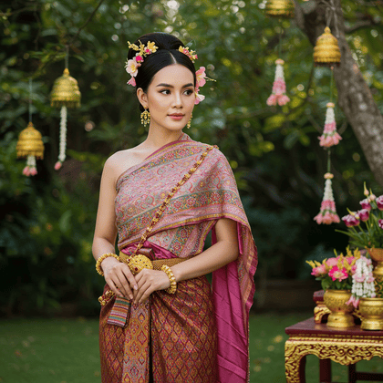

Welcome to Southeast Asia's Traditional Clothing!
Here you can explore Southeast Asia's Traditional Clothing. Please feel free to explore the page, learn more about traditional clothing and where to buy it!
Thailand
From the elegant Chut Thai to vibrant everyday garments, Thai clothing reflects grace and rich heritage.
Laos
Laotian clothing, like the traditional Sinh skirt and intricately woven patterns, embodies centuries of artistry.
Cambodia
The graceful Sampot and ornate silk costumes of Cambodia tell stories of culture, tradition, and pride.